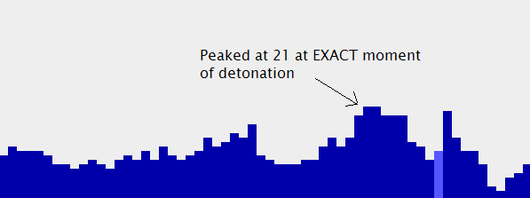

A Little Weird
reality bizarres the standard
| Author | Message |
|---|---|
| Sean |
We had a little geiger game session, and our last round was really cool. Here is a log, and the graph:
Sean: to repeat for Js... we'll focus on making one dense psiball at the sensor then... after about a minute or two, someone (Doesn't matter who), say something in the chat once someone says something, we all detonate how's that? Vimick: good Jspapp: sounds awesome Antisankari: good to go gamemaniac: ill say something since thats my technique in sending anyway Vimick: ok Sean: ok sounds good... gamemaniac says detonate then we blow 'er up ready? Vimick: hahah sound sgreat ready Antisankari: Ack Jspapp: ready Sean: Ninja, game? Psi_Ninja: Sure gamemaniac: ready Sean: ok go Sent at 05:14 pm on Monday. gamemaniac: detonate Vimick: damn Psi_Ninja: Still climbing. Sean: nice! gamemaniac: that looks good Vimick: that was a spike Jspapp: woo Sean: I told you this shit was legit Jspapp: lol Vimick: good idea sean Antisankari: it might be due to the detonation Psi_Ninja: Woot! Antisankari: OR our expectations after it =P Sean: it peaked at 21 for two widths, at the exact moment very nice, I'm impressed Vimick: then dropped one and went back to 21 Sean: good job team :-P Psi_Ninja: Go A-Team! Sean: hehe Psi_Ninja: XD Vimick: good idea with the explosion Jspapp: lol gamemaniac: woah Sean: yeah that's a good technique gamemaniac: look at the drop too Antisankari: Manhattan project resurrected The peak occurred at the exact moment. It was pretty cool to see :-). ~Sean Last edited by Sean, 4 years, 8 months ago |
| Psi_Ninja |
That was pretty cool. Im glad to have been a part of that =).
EDIT: I just realized that your graph is different from ours. I dont have a copy of it, but somone is going to post it soon. no clue how they could be different, but they are. Last edited by Psi_Ninja, 4 years, 8 months ago |
| Vimick |
here is the discrepancy the top image is the starting and stopping point of seans graph from above. the second image is my screenshot of the same time frame. the third i changed the color of my screenshot and overlaid it on top of seans screenshot to shoe the differences. I don't understand how we could have got different results. weird
 Last edited by Vimick, 4 years, 8 months ago |
| SheepKing |
Okay do you notice that when you go to look the live streaming chart it STARTS on the left and fills in with time.
Your graphs are different because one of you had the graphs going BEFORE or AFTER the other person. Atleast, that's my theory. All that matters is the high clicks over the past 10 minutes where the same. Last edited by SheepKing, 4 years, 8 months ago |
| Psi_Ninja |
SheepKing and I tried this technique again. Here are the results.
 Posted 4 years, 8 months ago |
| Vimick |
sheepking. we figured that out but i lined up the two areas. they maybe shifted left or right depending on when we joined the game but the DATA should be consitent. as you can see when i overlayed the images the majority lines up perfect but there are a few clicks that are off.
Posted 4 years, 8 months ago |
| SheepKing |
packetloss?
Posted 4 years, 8 months ago |
| Antisankari |
Depends with what protocol is this thing sending its stuff with?
As far as I understand the way this thingy works, there is no way it should lose any packets if TCP is used. Last edited by Antisankari, 4 years, 8 months ago |
| Vimick |
ok here is definite results i tried to hold the meter constant. it held for an unnatural amount of time at 12 and when i released, it spiked to 26 for 2 widths
 Posted 4 years, 8 months ago |
| The Unknown |
Don't forget, almost all of those twelves were caused by an error. I've no idea about the 26's, though.
Posted 4 years, 8 months ago |
| Vimick |
how do you knwo the 12s were caused by an error? i didn't get an error
Last edited by Vimick, 4 years, 8 months ago |
| The Unknown |
The lag kept climbing, and eventually it said:
Data is expired: The geiger counter is probably turned off. And then it started working again and read 26 twice.Posted 4 years, 8 months ago |
| Vimick |
I didn't recieve any error. but that could explain it.
Posted 4 years, 8 months ago |
| delimew |
course, one could also argue that it was you trying to hold it that caused the error, which would still count for something.
not sure how likely such a thing would be though >.> Posted 4 years, 8 months ago |
| Vimick |
that would require a lottttt of control to cause an error. i wont even come close to ever claiming credit for that. all i know is i personally tried to hold it were it was before any error occured. people recieved errors, i didnt. and also the spiked happened right after i physically stopped concentrating on holding it. it could be a coincidence. but either way it seemed like something
maybe sean can explain if there were any errors and clear some of this up. Last edited by Vimick, 4 years, 8 months ago |
| Sean |
It is possible for a client to miss some of the data... i.e., miss a column every now and then. The data is posted to the web, and then a client downloads it. But if new data is posted before the client grabs the old data, it will just miss it.
The good news is that all of the data is logged. What I'll do is make a separate function that can generate a "complete" graph based on the logged data. That way, if you want to take a look at a complete graph, you can use that feature to look at all the data. Overall though, a missing column here or there won't affect the overall result. The CPM is calculated over the past minute - while each column represents 8 seconds worth of data. So if there's a burst of clicks, they should be present for a few widths. If I make a history viewer, then that will always be correct. It just will be delayed, and won't be good for streaming data. That's probably the best solution. So: keep track of the dates/times you'll want to review once I get that feature up and running. I'll make it so you enter a start date/time, and end date/time, and it will generate the graph based on the logged data. EDIT: As for the "data expired" part... that I can make a little better. Right now, it reads the data from the server. If the data is over 2 minutes old, then it shows that error. The problem is that if the data is the same data it just downloaded, it will still add another column. So the lag will climb, and the graph won't change - because it's downloading the same data, over and over again. What it should do is if it downloads the same data, then it shouldn't update the graph. I can make that edit right now... which I will. Maybe I'll add the history viewer while I'm at it. ~Sean Last edited by Sean, 4 years, 8 months ago |
| SheepKing |
Geiger counter is a hit :-D
Posted 4 years, 8 months ago |
| Sean |
History graphing function now works!
http://alittleweird.com/geiger-game.php?graph=1&sm=0&ts=1208812800 Vimick: http://alittleweird.com/geiger-game.php?graph=1&sm=0&ts=1208827080 The big gray band means theres no data (for whatever reason). Official graph ^ ~Sean Last edited by Sean, 4 years, 8 months ago |
| Vimick |
I see so my trying to hold it was a fluke and the data did error. kind of a weird coincidence that those happened at the same time.
"The CPM is calculated over the past minute - while each column represents 8 seconds worth of data. So if there's a burst of clicks, they should be present for a few widths." does that explain the 2 widths of 26 afterward? Ican understand the spike contributed to lag. Sometimes when I'm downloading something and my computer lags the download speed stays the same. when the lag lets up the speed spikes dramatically (from maybe 500KB/s to 2.5MB/S) to catch up and even out thanks for clearing this up. Kind of disappointing that it wasnt me that affected the counter but the lag. oh well. keep on trying. :P Last edited by Vimick, 4 years, 8 months ago |
| Linked |
hey sean the history graph doesn't have the date/time function so i was wondering when you would add that?
never mind i found it on the game page :P Last edited by Linked, 4 years, 8 months ago |